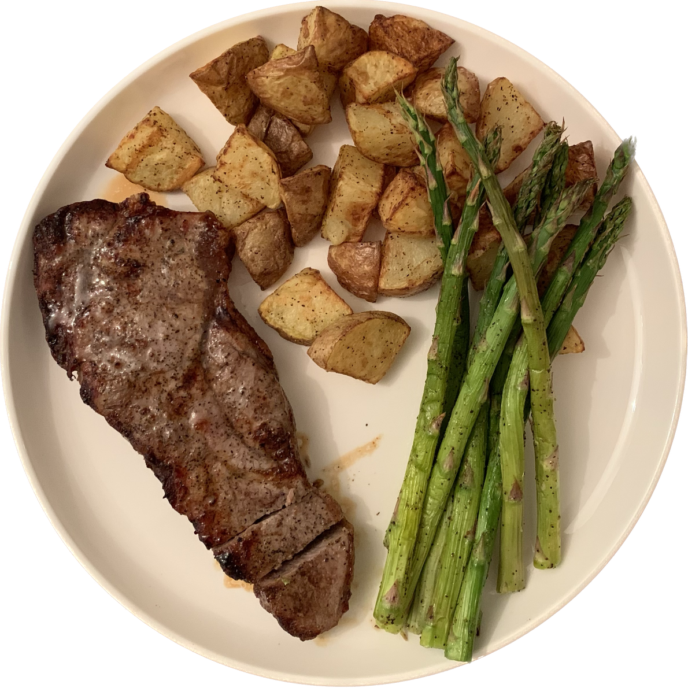

STEAK (POTATO + ASPARAGUS)

small potatoes
asparagus
steak
1. Pan fry or air fry seasoned steak for about 13 to 15 minutes.
2. Chop the small potatoes in halves or quarters.
3. Pan fry or air fry seasoned potatos for about 13 to 15 minutes.
4. Pan fry or air fry seasoned asparagus for about 8 to 10 minutes.
5. Plate the steak, potatoes, and asparagus.